0 まずここ
3分で分かる采来
采来はAIモデルそのものではありません。
Codex・Claude CodeなどのAI開発ツールを統括し、作業状態・引き継ぎ・検証結果・判断を管理するローカル開発運用基盤です。
AIが変わっても、作業を継続できる状態を残すことを目的とします。
依頼する：第2章 ／ 停止から再開：第4章 ／ モデルを切り替える：第5章 ／ プロジェクトを管理：第6章 ／ 構成を知る：付録A
用語集
| 用語 | 説明 |
|---|---|
| 作業ボード | 依頼と担当の状態を見て、回答・承認・再試行を行う画面 |
| プロジェクト台帳 / Ledger | 目的、場所、起動・検証方法、受入条件などを継続管理する情報基盤 |
| Harness | AIへ作業範囲・制約・参照資料・完了条件を与える制御枠組み |
| Agent | AIに与える役割・担当。モデルそのものとは別 |
| Skill | 必要な時に読み込む専門知識・手順・ルール |
| Handoff | 別Agentや別セッションへ、実施内容・判断・証拠・残作業を渡す記録 |
| State | 現在の工程、担当、停止理由、承認待ちなどの作業状態 |
| Evidence | 実行結果・検証結果・根拠となる記録。AIの報告とは区別する |
| Shadow Mode | 候補を実際の処理へ採用せず、記録・比較する評価方式 |
| Agent選択層 / Routing Provider | 担当Agentの候補を評価する接続先。「あなたの判断」は人の承認・選択を指す |
采来の安全原則
- AIの報告だけで完了扱いしない。
- 実行結果・検証結果・証拠を確認する。
- 未確認事項はUNKNOWNとして残す。
- 削除・公開・外部送信・権限変更は人間が確認する。
- Harnessの作業制約とOSレベルの隔離は別物。
- 個人情報・APIキー・Cookie・アクセストークン・顧客情報・社内機密を不用意にAIへ渡さない。
継続性の中心は特定のモデルではなく、Harness・State・Evidence・Ledgerです。人は記録と根拠を確認して次の作業を決めます。
1 采来とは
采来とは何か
開発依頼を工程と担当へ分け、状態・証拠・引き継ぎをブラウザで管理するツールです。
何が楽になるか
- モデル変更や新しいセッションのたびに、実施内容と残作業を説明し直す負担を減らせます。
- 停止理由・承認待ち・次の操作をボードで確認できます。
- プロジェクトの情報と検証条件を台帳に集め、開発と整理を続けやすくします。
できること
- 作業依頼・担当状態・Codex／Claudeへの割り振り
- 担当切替・引き継ぎ履歴、作業履歴・検証結果・未確認事項の記録
- プロジェクト台帳、Harness生成・補完、共通Agent／Skillの利用
- 停止・質問・承認・再試行、Ollamaの担当候補のシャドー評価、専用画面の操作テスト・自動引き継ぎ
- プロジェクト移動・アーカイブ管理
できないこと
- 前モデルの内部記憶・会話全体をそのまま移すこと
- 台帳登録だけで開発を始めること
- AIのdoneを実機確認済みとして保証すること
- HarnessだけでOSレベルの隔離を行うこと
- Ollamaを開発実行Agentの代替として使うこと
- 未測定のトークン削減効果を保証すること
- Computer Useへ自由なGUI操作を許可すること
最初の依頼は第2章へ。 個別の画面操作から読み始められます。
現在の実装状態
| 機能 | 分類 | 現在の状態 |
|---|---|---|
| 担当切替・引き継ぎ履歴 | IMPLEMENTED | 実装済み。内容と現在のソースの照合は人／Agentの運用 |
| 共通資料の必要時読み込み | IMPLEMENTED | 実装済み |
| 再試行時の完全一致重複指示整理 | IMPLEMENTED | 実装済み。意味の異なる指示は勝手に削除しない |
| プロジェクト台帳 | IMPLEMENTED | 実装済み。登録だけで開発は開始しない |
| Git差分の利用 | OPERATION | 推奨運用 |
| 全タスクのGit差分自動収集・最適化 | UNKNOWN | 確認できていない |
| OllamaのAgent選択候補評価 | IMPLEMENTED | 評価経路のみ。通常の開発工程は既存担当を維持 |
| 開発Agent選択のOllama候補採用 | NOT TESTED | 開発Agentの自動切替は対象外。受付分類・操作テストの限定採用は実装済み、変更後の実通信は未検証 |
| Git運用・開発全体の削減効果 | UNMEASURED | 未測定 |
| Harness生成・補完 | IMPLEMENTED | 下書き生成・補完。人による確認が必要 |
| UNKNOWN・受入条件・最終完了判断 | OPERATION | 人が確認する |
| スマホ・音声・移動・削除・CLI更新等の今回の検証範囲 | NOT TESTED | 付録Fで確認する |
2026-10-02追加：専用画面の操作テスト・Ollamaから通常モデルへの自動引き継ぎはIMPLEMENTED。限定条件のCLI入力削減はMEASURED。実業務の削減率はUNMEASUREDです。操作テストと継続計測を参照してください。
分類の意味とシステム機能／運用の境界は第13章、検証範囲は付録Fを参照してください。
2026-10-02の限定運用：依頼の一次分類と操作テストの軽い選択にOllamaを使用します。通常の開発工程は設定した担当を維持します。設定・使い方・未確認事項を参照してください。
2 最初の依頼
- 対象を台帳で確認。目的・正本ソース・作業範囲・起動方法・検証方法を整理します。
- チーム設定を確認。役割ごとのCLI・モデル・推論設定と、作業対象への登録状態を確認します。
- 「＋ 依頼を追加」を押す。依頼名、対象プロジェクト、達成したいこと・完了条件を入力します。
- 進め方を決める。計画を先に確認するなら自動進行を選択しません。自動進行を選ぶ場合も判断待ち・権限・環境障害で停止することがあります。
- 送信内容とCLI利用枠を確認。秘密情報・個人情報・認証情報・機密情報を含めず、「計画を開始する」を押します。
- 計画と結果を確認。必要な承認・質問に回答し、検証の根拠とレビュー結果を読んで完了を判断します。
依頼文の記入例
目的：一覧のカードを読みやすくする。 対象：web/ledger.html・ledger.js・ledger.css。 触らないもの：DB形式、削除・アーカイブ処理。 完了条件：検索と詳細表示を維持し、スマホ幅でも文字が読める。 検証：変更差分、画面表示、未検証項目を報告する。 公開・push：行わない。
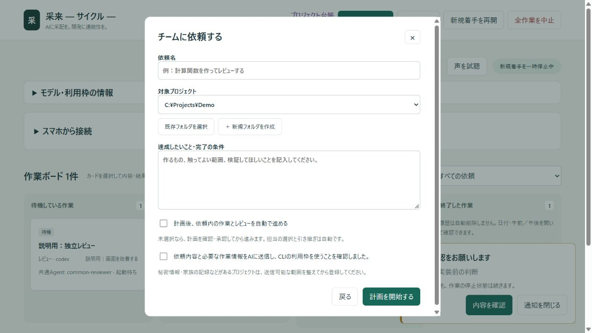
送信後に起きること
- 「計画を開始する」後は、ボードのカードと「最近の動き」で受付と担当状態を確認します。
- 開始前は「待機している作業」、担当実行中は「チームが作業中」へ表示されます。
- 計画承認や質問などが必要なら「あなたの判断」で対象カードを開きます。第4章へ進んでください。
- 担当終了後は「終了した作業」の報告、検証根拠、未検証事項を確認します。依頼全体の最終判断は利用者が行います。
停止は異常とは限りません
人の承認・回答待ちは予定された停止です。利用枠不足・権限不足・外部環境障害・検証不能も、原因を明示して停止する場合があります。状態だけで失敗と決めず、理由と必要な操作を確認します。
AIからdoneと報告されても、検証根拠と未検証事項を確認し、最終的な完了判断は利用者が行います。安全原則1・2を参照してください。
3 作業ボード
| 列・状態 | 意味 | 利用者の操作 |
|---|---|---|
| 待機している作業 | 先行工程・承認・新規着手の再開を待っている | 依存する判断・承認と一時停止状態を確認 |
| チームが作業中 | 担当セッションが実行中 | 報告・最近の動きで状況を確認。必要なら中止 |
| あなたの判断 | 質問・承認・失敗などで止まっている | カードを開き、停止理由と回答先を確認 |
| 終了した作業 | 担当が終了・中止等になった履歴 | 日付＋午前／午後を開いて内容を確認 |
レビューで修正が必要なら修正と再レビューへ進みます。修正回数には上限があり、初期設定の max_repairs は2です。上限・情報不足・権限・認証・利用枠・環境障害では人の判断へ戻します。無制限に失敗を繰り返すループではありません。
終了履歴は日付と午前／午後のグループを開いて確認します。
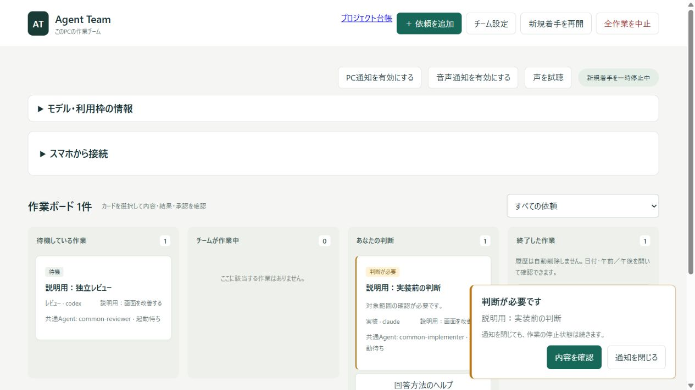
「新規着手を再開」は全体の新規着手停止だけを解除します。個別カードの質問・失敗・承認待ちは解除しません。
「全作業を中止」は作業を停止する操作です。「再開」と取り違えないでください。
終了履歴は自動削除されません。担当終了と依頼全体の完了は別です。doneは利用者の最終確認を代替しません。
4 判断・承認・再開
- 「あなたの判断」のカードを開く。
- 停止理由と次の操作を読み、確認日時・担当側／統括側・未確認点を分けて確認する。
- 必要なら「原因を確認して回答案を作る」。生成した案の内容を確認する。
- 「回答案を再試行の入力欄へ入れる」で転記し、回答・補足を入力して再開で送信・再試行する。転記だけでは再開しない。
- 同じエラーが出る場合は、失敗した操作・対象パス・終了コード・エラー全文を確認する。同じ復旧待ちの案を繰り返さない。
選択式の質問は各項目の選択肢と補足欄へ回答します。「引き継ぎ情報を登録・訂正する」は事実の記録欄で、質問への回答や担当の再開を行う欄ではありません。
工程を分割して移管する場合
「ボードから復旧する」で後続工程と、そこで必ず実施する範囲・測定時点・保存する証拠を指定します。現在の報告を確認して「移管を保存して再開」を押します。「移管を保存」だけなら停止状態を維持します。利用枠・認証障害は移管で解消しません。
回答に根拠が足りない場合、報告全文・時刻・報告元・根拠・差分・採用後の影響・未確認点を先に確認します。表示される場合は「AIに根拠を確認させる」を使えます。この調査もCLI利用枠を使い、採用は利用者が決めます。
統括側のPython起動成功は担当側の実行成功とは別です。報告が「工程完了」でも、その工程の証拠と後続工程の完了条件を確認します。古い診断結果で自動的に作業を完了扱いにしません。
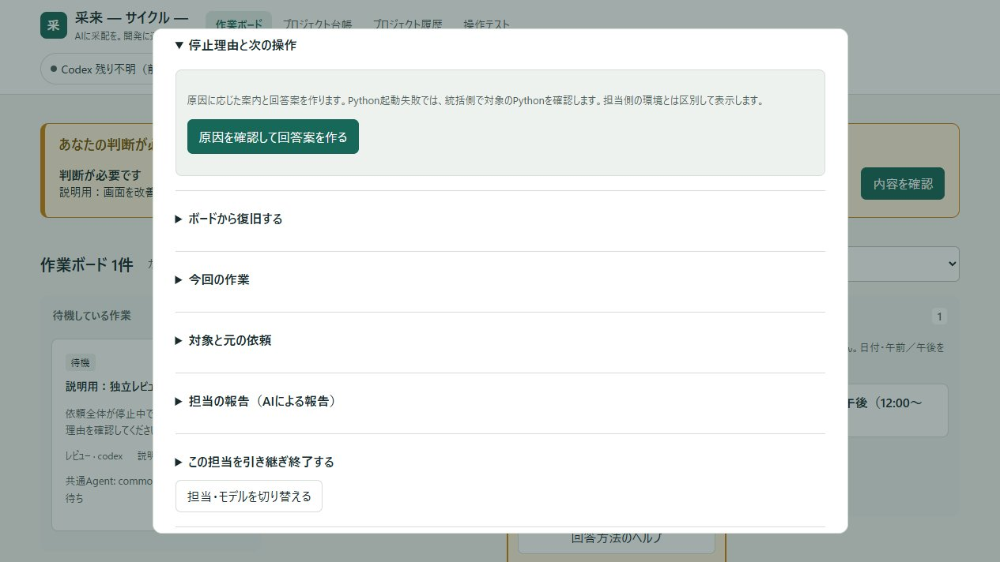
5 Agent・モデル切替・Handoff
ボード上部の「チーム設定」で、計画・調査・実装・レビューの担当CLI、モデル、推論設定を選び「モデル設定を保存」します。保存は今後作成するタスクに適用します。既存の停止・待機タスクはそのカードの「担当・モデルを切り替える」から変更します。
「モデル一覧を再取得」でCLIから取得した選択肢を更新します。表示されたモデルが必ず実行可能とは限りません。認証・利用枠・アカウント権限・実行環境は実行時にも確認します。Opus/Sonnet等の別名と、画面に併記された版を確認してください。
共通Agentの役割は第8章で確認できます。
Skillは名称・説明などのメタ情報から必要なものを選び、本文や関連資料は必要時に読み込みます。全資料を毎回プロンプトへ貼り付ける設計を避けます。共通Agentの選択でプロジェクトの権限・完了条件が自動的に広がることはありません。
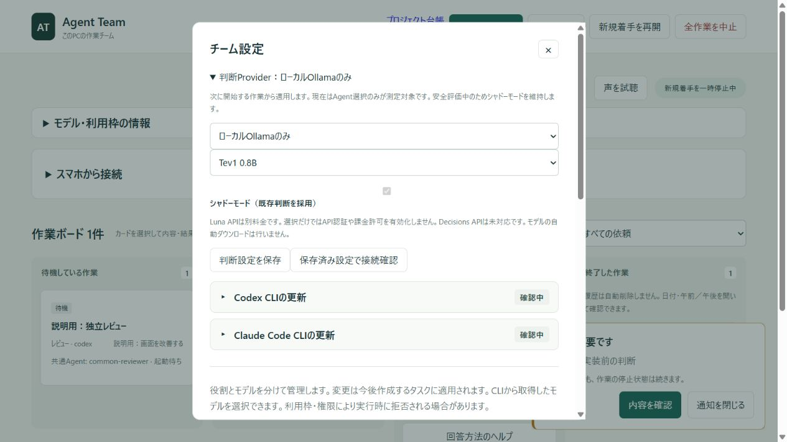
モデルを切り替えて続ける
- 停止・待機中のカードを開き、現在の担当・実施内容・検証結果・停止理由を確認。
- 「担当・モデルを切り替える」で利用可能な担当とモデルを選ぶ。
- Handoffに基準、変更ファイル、利用者の判断、証拠、未確認・残作業を残す。
- 必要な回答・承認を行い、現在のソースと記録を照合して再開する。
前モデルの内部記憶の移植ではなく、State・Evidence・Handoffを読むことで継続します。実施済み処理を再実行する前に確認してください。
6 プロジェクト台帳
ボードの「プロジェクト台帳」から開きます。名前・パス・目的を検索し、分類で絞り込みます。カードのプロジェクト名を押すと詳細が開きます。
| 操作 | 用途 | 結果 |
|---|---|---|
| フォルダを再調査 | 開発フォルダの存在・候補情報を再収集 | 管理項目の入力を保持し、調査結果を更新 |
| パスを指定して登録 | 個別フォルダ／新規プロジェクトを登録 | 台帳の登録。AIの作業開始とは別 |
| JSONを書き出す | 台帳を別用途へ持ち出す | 内容を確認し、機密情報の扱いを守る |
| DBをバックアップ | 台帳の状態と履歴を保全 | プロジェクト本体のバックアップとは別 |
| 分類を編集・保存 | 用途別分類を整理 | 台帳の分類変更。フォルダは移動しない |
「調査範囲・未調査の範囲」で今回のスキャン範囲を確認します。件数は資料・候補・親子プロジェクトを含むため、独立したアプリ数と同じとは限りません。完了・運用中などの管理状況は自動判定しません。
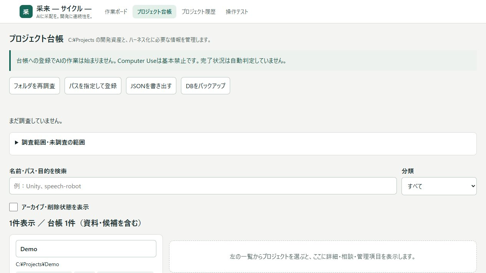
各セクションの見出しで開閉します。● 入力ありはデフォルト値以外の入力、○ 入力なしは空欄・デフォルト値、－ 自動情報は調査情報です。入力マークは未保存の値も反映するため、保存済みの証明ではありません。編集後は「台帳に保存」を押します。
| セクション | 記録すること |
|---|---|
| 確認したメタ情報 | 検出された技術情報、Git情報など |
| 親・子プロジェクトの情報 | 台帳上の親子、所属階層、親Gitとの関係 |
| 基本情報 | 名前、目的・利用者、分類、管理状況、管理担当 |
| ソースと起動方法 | 正本ソース／配備コピーの区別、依存・起動方法 |
| 検証と完了条件 | 検証方法、受入条件、未検証事項 |
| 次の作業と注意事項 | 優先課題、制約・危険、引き継ぐ内容 |
| ハーネス化提案 | 提案の下書き、読み取り調査、変換・補完 |
Gitの親子関係と台帳の親子関係は別の情報です。子フォルダを移しても親Gitの履歴が自動的に子へ複製されることはありません。物理削除・統合を別の方法で行った場合、再調査で存在を確認し、管理状況・注意事項へ統合先と実施内容を記録します。
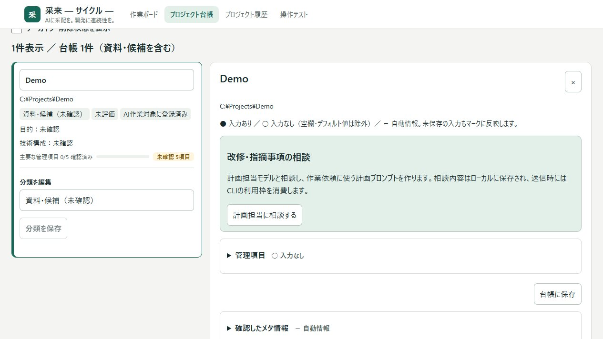
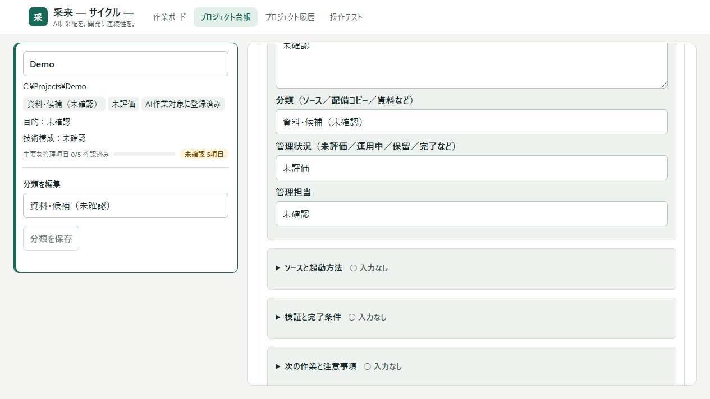
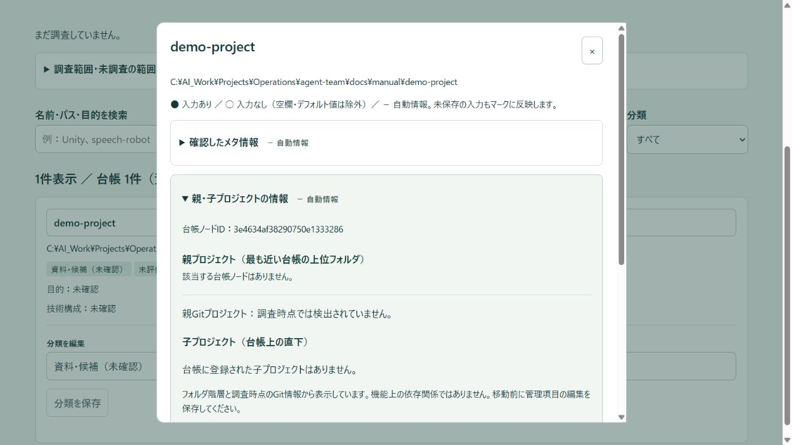
7 Harness生成・補完
A. 台帳から提案する
詳細 → 管理項目 → ハーネス化提案 →「提案を生成」。台帳情報からローカルで下書きを作り、確認・編集後「台帳に保存」します。このボタンでは外部モデルや利用枠を使わず、プロジェクト内のファイルも作りません。
B. 既存／新規プロジェクトを変換する
- 「読み取り専用調査・ファイル案を作成」を押す。
- 読み取り範囲・検出結果・未知の項目・作成予定・衝突・既存スキップを確認。各ファイル案を展開して読む。
- 「既存ファイルを整理してフォルダ構成を変換」で追加フォルダとファイル移動案を入力・確認。コード配置は推測で自動変更しない。
- 対象パスと案を確認してチェックし、「確認したコンバートを実行」。確認案は30分で失効する。
- 生成資料・移動内容・参照パス・起動・検証を確認する。生成だけで開発ループの受入完了としない。
現在の案は19ファイル：AGENTS.md、CLAUDE.md、PROJECT_CONTEXT.md、GOAL.md、SCOPE.md、ARCHITECTURE.md、COMMAND_ALLOWLIST.md、SECURITY.md、.harness/配下のREADME・context・workflow・rules・definition-of-doneと6種の作業プロンプト。既存ファイルは上書きしません。フォルダ作成と個別ファイル移動は確認した案だけを適用します。
C. 既存ハーネスを情報で補完する
「既存情報からハーネスを補完」で前後の文面と根拠を比較して適用します。README・package.json・限定したindex.html/sw.js等を読み、出典行と候補を示します。GOAL、ARCHITECTURE、COMMAND_ALLOWLIST、SECURITY、.harness/context、.harness/definition-of-doneが対象です。補完前の原本と適用記録を保存します。
候補の既知の制限は第13章を確認します。UNKNOWNや受入条件は安全原則3に従って確認してください。
読み取り・補完はローカルの限定処理です。モデル/APIの呼び出し、依存インストール、プロジェクトのコマンド実行、権限の拡張は行いません。機密データ領域やリンクを除外しますが、包括的な秘密情報スキャナーではありません。
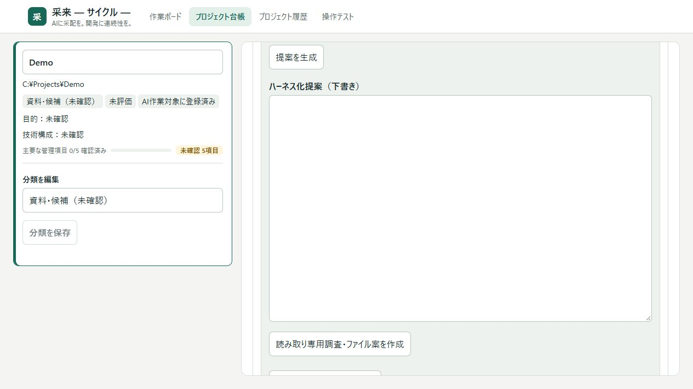
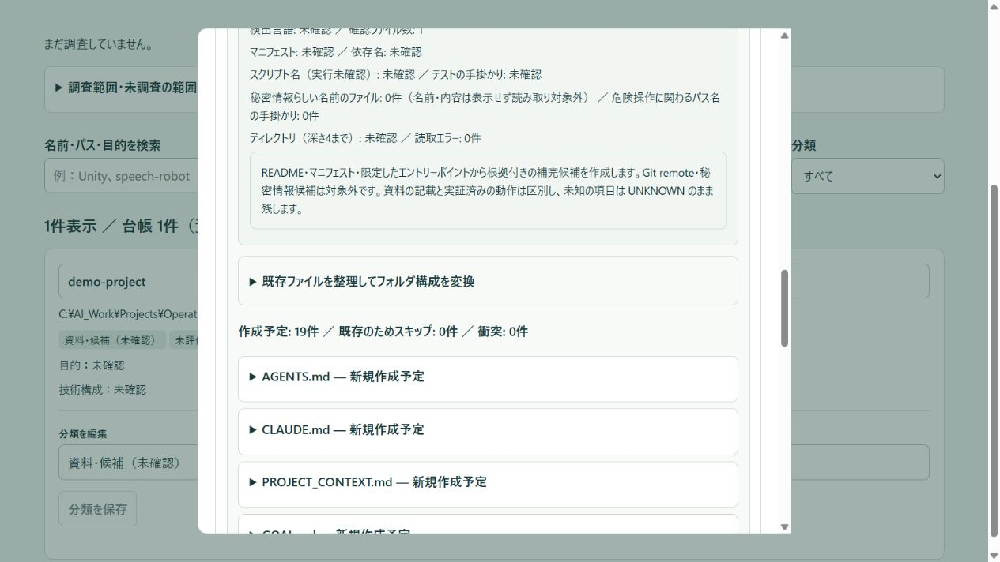
8 共通Agent・Skill
Agentは役割、Skillは必要な知識・手順です。担当CLIのモデルと区別して設定・確認します。
| 役割 | 共通Agent | 作業の性質 |
|---|---|---|
| 計画・調査 | common-explorer | 範囲を絞った読み取りと整理 |
| 実装 | common-implementer | 承認範囲の変更 |
| レビュー | common-reviewer | 独立した読み取り専用レビュー |
| セキュリティ関連 | common-security-reviewer | 必要なセキュリティレビュー |
| ハーネス監査 | common-harness-auditor | 経路・検証ゲート・再試行の監査 |
共通資料はメタ情報から候補を選び、必要な本文・関連資料だけ読み込みます。共通Agent名とセッションIDは担当詳細で確認します。プロジェクト固有の目的・範囲・起動方法・完了条件はプロジェクトに残します。
共通Agent定義を利用しても権限が広がるわけではありません。安全原則5を参照してください。
9 Git差分を利用したコンテキスト削減を狙う運用
変更箇所と、判断に必要な最小限の文脈へ確認対象を絞ります。
Git自体がトークンを削減するのではなく、AIが読む情報を変更箇所と必要な文脈に絞ることで、入力トークンと再調査を抑えることを狙います。Gitの基準点は、モデルを切り替えたときに「どこまで実施したか」を照合する手掛かりにもなります。
- 作業開始時の基準を記録。現在のコミット、ステージ済み・未コミット・未追跡の状態を確認します。利用者の既存変更と今回の変更を区別します。
- 変更一覧から確認対象を選ぶ。変更ファイル名を先に確認し、今回の作業に関係する差分・関数・関連資料を読みます。未追跡ファイルは通常の差分に出ないため別途確認します。
- 引き継ぎを短く、根拠付きにする。基準コミット、対象ファイル、変更概要、検証結果、未検証事項、残作業を記録します。次の担当はこの記録と現在のソースを照合し、重複実装を避けて続行します。
- 必要な文脈を追加で読む。差分だけで判断できない共通処理、依存先、設定、データ構造、受入条件は必要な範囲を追加します。情報を省きすぎて誤修正することを防ぎます。
読み取りコマンドの例（対象プロジェクト内で実行）
git rev-parse HEAD git status --short git diff --name-status git diff --cached --name-status git diff -- path/to/relevant-file git diff --cached -- path/to/relevant-file
コマンド例は自動実行されません。実際の作業環境・許可を確認してください。差分に秘密情報が含まれる場合はAIへ渡さず、未追跡・バイナリ・生成物の扱いを別に確認します。Git内部の直接読み取り制限を回避する指示ではありません。
現在の対応状況は実装状態表を参照してください。
推奨する確認順
- 基準コミットを記録
- 未コミット・未追跡を確認
- 変更ファイルを確認
- 関連差分を確認
- 依存先・共通処理・設定などを必要な範囲だけ追加確認
- 結果・根拠・残作業をHandoffへ記録
これはシステムによる自動トークン最適化機能ではなく、人／Agentが守る運用です。未追跡・バイナリ・生成物、差分に出ない受入条件も別に確認します。
効果の測定方法
同じ作業・モデル・検証条件で比較します。文字数をトークン数と同一視しません。
- 入力トークン、キャッシュ利用量、出力トークン
- 再試行回数、完了までのAgent呼び出し回数
- 作業結果の品質、人間による修正量
「文字数が何％減ったのでトークンも同じ割合で減った」とは報告しません。削減効果は実装状態表のUNMEASUREDを参照してください。
10 プロジェクト整理
- 詳細 →「プロジェクトのフォルダを移動」を展開。
- 移動先の絶対パス（新しいプロジェクトフォルダ）を入力。親フォルダは作成済み、指定した移動先そのものは未作成にする。空フォルダでも先に作らない。
- 「移動の確認画面へ」を押し、移動元・先・Git影響・台帳ノードを確認。
- アプリ、IDE、ビルド、同期を停止。確認チェック後、「この場所へ移動を実行」で実施。
- 新しいパスで起動できるか、起動スクリプト・IDE・AI作業対象を確認。
同じボリューム内の移動に対応します。独立したGit本体は履歴・remoteごと移動します。親Gitに所属する子フォルダでは親に削除差分が残り、親Gitの履歴は子へ移りません。外部worktreeはGitの移動処理を使います。サブモジュール等は対象外のため案内を確認します。
ソース内の絶対パス、IDE、外部スクリプト、既存AI依頼・引き継ぎ、作業許可設定は自動更新しません。台帳のパス更新とアプリの起動修正は別です。GitHub公開設定・remote変更・commit・pushは移動機能で行いません。
失敗したら同じ操作を繰り返す前に、移動履歴、元と先の存在、復旧確認待ち状態を確認します。正常移動を戻す場合は同じ機能で元の未使用パスへ戻します。
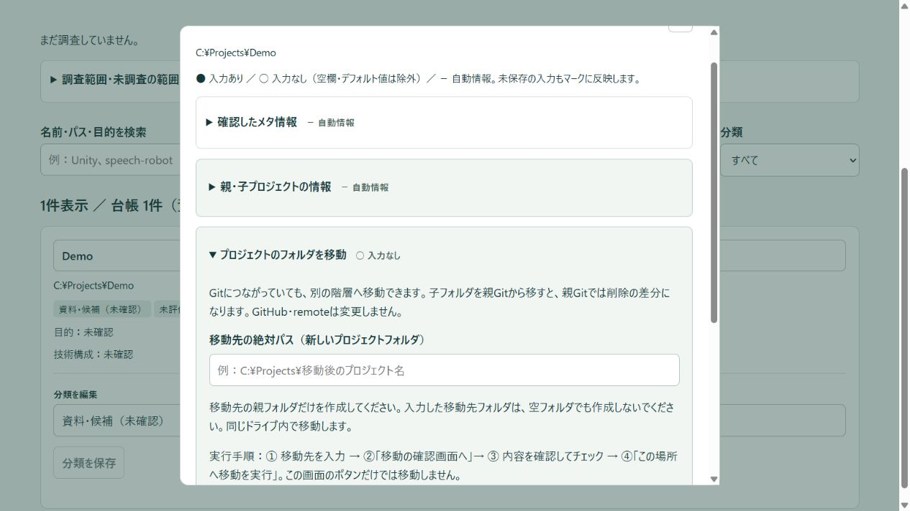
11 アーカイブ・削除・復元
采来のアーカイブはバックアップと照合を完了した後、元プロジェクトフォルダを削除します。元データをそのまま残す保管操作ではありません。
- ZIPは暗号化されません。秘密情報を含む場合は保存先を管理します。
- バックアップの照合前に削除しません。
- 削除・GitHub公開状態変更の最終判断は人が行います。安全原則4を参照。
アーカイブ／削除
- 詳細 →「プロジェクトのアーカイブ」を開く。
- アーカイブなら「アーカイブ対象を確認」、削除なら「プロジェクトを削除」で確認画面へ進む。
- 対象フォルダ、容量・件数、ZIP保存先、検出されたGitHubリポジトリ・remoteを確認。自動検出できない公開先は欄へ1行1件で入力して確認し直す。
- アプリ・IDE・ビルド・同期を停止。削除とGitHub変更の確認を行い実施する。
- 進捗・履歴・ZIP・照合結果を確認する。画面を閉じてもPC側の処理は続く。
実行中の処理順と確認ポイント
- 対象プロジェクト・元フォルダを確認。
- 未コミット・未追跡の変更を確認して保存対象を把握。
- GitHub公開先と公開状態を確認。
- 必要に応じて非公開化し、状態を再確認。
- 確認したGit remoteを解除。
- 接続解除後のフォルダ全体をZIPへ保存。
- ZIPの内容・件数・必要ファイル・SHA-256と元データを照合。
- 進行状態を履歴へ記録し、元フォルダを退避・再照合して削除。
- 削除完了後に台帳を「アーカイブ済み／削除済み」へ更新。
- アーカイブ完了・ZIP・履歴を確認。
GitHubリポジトリ自体は残します。GitHub認証・管理権限が必要です。途中で失敗したら、最後に完了したステップと未完了のステップを履歴で確認し、同じ削除を繰り返さないでください。
台帳行と履歴を保持し、ZIPにはGit履歴・未コミット・未追跡・生成物等も含めます。稼働中采来 — サイクル —、親Gitの一部、外部Git作業ツリー、サブモジュール、他の台帳プロジェクトを含む範囲、未完了依頼のある対象等は制限されます。
WindowsのACL・所有者・全属性の完全再現は保証しません。復元時に確認します。
失敗時・復元
途中で止まったらZIP、manifest、退避フォルダ、履歴を保全します。GitHub公開状態は自動で公開に戻しません。削除中断は自動再開しません。復元はZIPと履歴のSHA-256を照合し、未使用の別フォルダに展開・照合してから戻します。
python -X utf8 restore_project_archive.py <履歴のアーカイブID> <RESTORE_DESTINATION>
このコマンドは采来 — サイクル —のフォルダで実行します。追加ストリームは専用復元ヘルパーを使用します。元データへ重ねて上書きしないでください。GitHub接続・公開設定・ACL・依存関係・アプリ動作は別に確認し、台帳を再調査します。
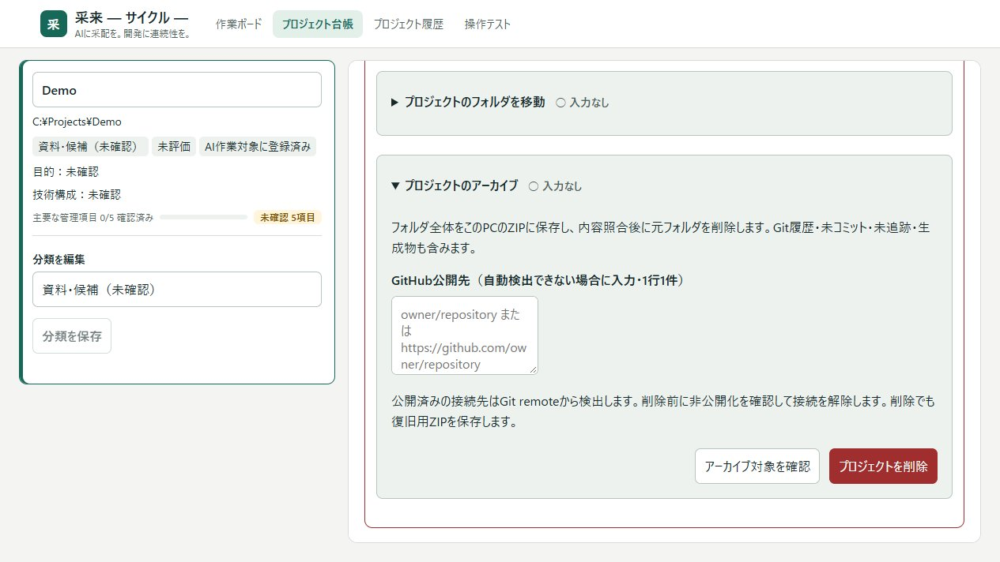
12 トラブル対応
| 症状・理由 | 確認 | 次の操作 |
|---|---|---|
| ページが開かない／別アプリが出る | 采来 — サイクル — /health、ポート使用者、統括ログ | 対象サービスを識別。別アプリを勝手に停止しない |
| 待機が進まない | 新規着手一時停止、先行工程、質問・承認 | 全体再開と個別回答を分けて操作 |
| Claudeの5時間枠を使い切った | 短期リセット時刻と週間枠 | 回復後に再試行、または利用可能な担当へ切り替え |
| OAuth失効／未ログイン | 采来 — サイクル —が使う実際のCLIの認証 | login-claudeでCLIログインを完了し再確認 |
| 利用枠が不明 | 取得制限・次回取得・認証 | 待つ／認証復旧。0%と決めつけない |
| Python起動失敗 | 実行ファイル、作業ディレクトリ、終了コード | 原因確認案を作り、担当側でも再確認 |
| Windowsサンドボックス／権限エラー | 失敗した操作・対象・実環境 | セキュリティ設定を安易に解除せず具体的な障害を調査 |
| Computer Use／画面取得で停止 | 基本禁止方針、要求された確認の目的 | プログラムで可能な検証へ分割。実画面確認済みと偽らない |
| 引き継ぎ文脈が大きすぎる | 文脈上限・分割索引・各断片 | 履歴を保ち分割読込。未読・未知を切り捨てない |
| 引き継ぎ情報が食い違う | 全文・時刻・報告元・根拠・影響 | 根拠確認を依頼し、採用情報を明示。旧報告は履歴に残す |
| スマホでForbidden | 現在の接続先・合言葉・Cookie・送信元 | PC案内から入り直す。認証制約を無効化しない |
| 移動ボタンがエラー | 元の存在、親フォルダ、未使用の移動先、Git、ロック | 実行前の確認画面を完了。使用アプリを停止 |
| アーカイブ／削除できない | 親Git・worktree・子台帳・未完了依頼・権限 | 制限理由を解消。確認画面と履歴を読み再実行 |
| ハーネスのUNKNOWNが多い | 台帳の目的・起動・検証、資料の根拠 | 入力・補完案を確認。実際の受入条件は人が設定 |
参考 操作テストと継続計測
作業ボード上部の「操作テスト」から開きます。固定した合成データに対する検索・ページ移動・状態更新・該当なし確認を評価します。実プロジェクトの画面や本番依頼を自由に操作する機能ではありません。
- モード・目標・通常モデル／引き継ぎ先（ClaudeまたはCodex）を選ぶ。
- 固定テスト情報の送信とCLI利用枠使用を確認する。
- 「操作テストを開始」、比較は「4目標を両モードで比較」を押す。
- 進捗・引き継ぎ・結果・利用量を確認する。中止や未終了テストの終了は画面から行える。
2操作続けて画面が変わらない場合、STOP・接続失敗・不正候補の場合は通常モデルへ引き継ぎます。全体8操作上限は維持します。中止後の返答は実行しませんが、通信中の利用枠消費が直ちに止まるとは限りません。
| 計測段階 | 通常モデル | Ollama併用 | 同じ成功ケースのCLI入力 |
|---|---|---|---|
| 自動引き継ぎ試作：24件 | 11/12成功 | 12/12成功 | 11件で32.5%減 |
| 采来への組み込み：16件 | 6/8成功 | 8/8成功 | 6件で57.2%減 |
上記は4種類の合成操作に対する暫定評価です。CLI入力総量の記録値であり、費用・アカウント残量や実業務の削減率は保証しません。実アプリの代表操作、反復、異常系を増やし、同じ受入条件で成功率・入力／キャッシュ／出力・呼び出し・完了時間・誤操作・人の介入を継続計測します。計測ごとに根拠・条件・失敗も記録し、本マニュアルとレポートを更新します。
有効性を確認したのは、限定した操作選択と、詰まったときの通常モデルへの引き継ぎです。開発タスク全体では受入品質が揃わず、削減効果を判定できていません。
参考：判断Provider導入・計測 総合レポート（グラフ付き）
追加評価：実台帳の3方式比較（2026-10-02）
采来の実台帳UIを隔離DB・合成40件で動かし、読取・検索・分類フィルター・作業ボードへの移動を、各目標10回、3方式で計120件評価しました。保存・削除・一覧ページングは対象外です。
| 方式 | 通常ケースの成功 | 40件の総完了時間 | CLI呼び出し |
|---|---|---|---|
| 固定手順 | 40/40 | 12.9秒 | 0回 |
| 最適化した通常モデル | 40/40 | 493.4秒 | 40回 |
| Ollama＋自動引き継ぎ | 40/40 | 70.2秒 | 0回 |
MEASURED：通常モデル比でOllama方式の総時間は約86%短縮。固定手順はさらに速く、AI利用量もゼロでした。固定化できる操作は固定手順を優先し、状態に応じた選択が必要な場合にOllama方式を候補とします。実業務全体の削減率や金額は保証しません。
Provider境界へ注入した通信エラー・期限超過・不正候補は、Ollama方式から通常モデルへ引き継いで復旧しました。中止と隔離アプリ再起動も評価しています。異常系は各1回中心で、追加の通信断後のブラウザー復旧はツールに拒否され未完了です。自然発生の障害、3方式で揃えた通信断／復旧比較、保存・削除は残課題です。
ケースと対象アプリはまだ限られています。成功例だけで採用せず、失敗・中止・介入を含め、今後も反復と異常系を増やして計測を続けます。
追加評価：実画面と判断部分を分けた比較（2026-10-02）
Home App Statusの変更していないUIと架空APIで複合目標・状態変更を評価し、別の合成画面でページ移動を確認しました。各方式30件すべて達成。通常モデルはClaudeへ変更しており、前述のCodex比較とは合算しません。
| 方式 | 成功 | 総完了時間 | CLI入力 | CLI呼出 |
|---|---|---|---|---|
| Claude単独 | 30/30 | 200.4秒 | 43,710 | 30回 |
| Ollama＋Claude引き継ぎ | 30/30 | 213.9秒 | 30,250 | 20回 |
MEASURED：CLI入力は約31%減、時間は約7%増。復旧処理180件と判断中キャンセル20件は安全条件を達成しました。復旧処理は実行層試験であり、毎回モデルへ新規問い合わせした比較ではありません。強制終了は未実施、電力は未測定、GPUは対象外です。追加評価の詳細。
適用範囲の最終追加測定
5分類×10反復×3方式、計150件。Claude・Ollamaへ実通信しましたが、操作対象は合成状態機械です。新しい実アプリの操作試験とは区別します。順序を交互にし、同じ初期状態・候補・受入条件・8操作上限で比較しました。
| 分類 | 併用時の速度（Claude比） | CLI入力 | 推奨 |
|---|---|---|---|
| 単純選択 | 約76%高速化 | 100%減 | 適用候補 |
| ページ移動 | 約85%高速化 | 100%減 | 適用候補 |
| 複合目標 | 約26%遅延 | 削減なし | 通常モデルへ直接 |
| 状態変更 | 約57%遅延 | 約4%増 | 通常モデルへ直接 |
| 判断材料不足：停止候補のみ | 約4%遅延 | 削減なし | 通信処理エラーのため判断能力は評価不能 |
通常モデル／併用はいずれも50/50達成。総判断時間259.5／219.6秒、CLI入力67,050／40,640、出力3,210／3,254、CLI呼出50／30回。各分類を同数含む今回の配分では、時間約15%・CLI入力約39%減でした。失敗した問い合わせと引き継ぎ時間も含みます。併用側はローカル90回の呼出を別途行っています。
手順が決まる操作は固定手順、少数候補の単純選択はOllama、複合目標や複雑な状態変更は通常モデルへ直接渡す構成を推奨します。全件を判断プロバイダーへ通す汎用優位性は確認できません。この推奨に基づき、依頼受付と操作テストに限定した振り分けを実装しました。全経路の自動分類ではありません。変更後の実引き継ぎは未検証です。
停止候補1件のOllama問い合わせ10件は通信処理エラーとなり、Claudeへの引き継ぎで停止しました。エラーの利用量は不明で、0消費とは扱いません。キャッシュ状態は完全には統制できず、クラウド入力の削減率を料金・利用枠・総計算量・電力へ換算しません。
今回の評価系列は一区切りですが、対象とケースはまだ限られます。実運用の目標分布、未知の実アプリ、モデル変更、長期利用量、保存・削除の復元、生成途中の中止などは継続して測定します。保存・削除は別の許可・受入条件・復元計画を用意し、今回実行していません。
2026-10-02の限定運用：依頼の一次分類と操作テストの軽い選択にOllamaを使用します。通常の開発工程は設定した担当を維持します。設定・使い方・未確認事項を参照してください。
参考 判断プロバイダーの限定運用
IMPLEMENTED：依頼受付の一次分類と操作テストの少数候補へ限定して判断プロバイダーを接続しました。以前の評価結果と、今回の実装後の確認状態は分けて扱います。
判断を使う順番
| 段階 | 処理 |
|---|---|
| 固定処理 | 完了・操作上限・中止・重複操作拒否などはルールで処理する |
| ローカル判断 | 短い単一目的の依頼の一次分類、3候補以下のページ移動 |
| 通常モデル | 複雑・曖昧・通信失敗・進捗なし。複合検索と状態更新は直接渡す |
| 人の確認 | 削除・公開・権限変更などの重要な承認は既存フローを維持する |
依頼の一次分類
- 通常どおり「依頼を追加」から送信する。
- 受付で調査・実装・レビュー等の分類を記録する。長い依頼や複合目的は通常の計画担当へ渡す。
- 担当詳細の「依頼の一次分類」で分類・処理元・理由を確認する。
- 計画担当が分類を参考に計画を整理する。分類だけで工程やレビューを省略しない。
Ollamaへ渡すのは分類ヒントの列挙値のみです。依頼本文・プロジェクトパス・ソースを受付分類のために送信しません。「人の確認が必要」の記録は承認そのものではなく、重要な操作には既存の承認が必要です。
操作テスト
- 作業ボードの「操作テスト」を開く。
- モード、目標、「通常モデル・引き継ぎ先」を選ぶ。ClaudeはSonnet / medium、CodexはGPT-6-Sol / mediumを使用する。
- 固定テスト情報の送信とCLI利用枠使用を確認し、「操作テストを開始」を押す。
- 少数候補のページ移動だけOllamaを使用し、複合検索・状態更新は通常モデルへ直接渡す。
- 進捗・引き継ぎ・CLI／ローカル利用量を確認する。停止は「テストを中止」。
2回連続で進捗がない場合、STOP・不正候補・接続失敗の場合は通常モデルへ引き継ぎます。上限は8操作・12判断。中止後の遅延結果は実行しませんが、モデル側の消費が直ちに停止する保証はありません。
設定と対象範囲
「チーム設定」→「判断Provider」で、ローカルOllamaと導入済みモデルを選び保存します。「判断層を停止」を選ぶと受付分類・操作テストのローカル判断を停止します。設定画面に他のProvider候補があっても、この限定経路はローカルOllamaのみを使い、有料APIへ送信しません。通常の開発工程の担当モデルを変更する設定とは別です。
Computer Useによる自由なGUI操作、通常の開発工程全体の自動Agent選択、権限の自動拡張は対象外です。
確認状態
本体の起動は確認済みです。NOT TESTED：変更後の一次分類精度、Claude／Codexへの実引き継ぎ、操作画面での一連の動作。以前の測定を新実装の動作保証として扱いません。UNMEASURED：今回の限定運用による長期の利用枠・費用・速度効果。
13 実装状態・既知の制限
機能ごとの現在の状態は実装状態表を参照してください。
システム機能と運用の境界
○：担当する機能／運用あり。△：部分的な支援で運用が必要。－：その側だけでは実施・保証しない。開発Agent選択はシャドー運用です。専用画面の操作テストではOllamaが操作を選択し、固定の実行関数が処理します。
| 項目 | システム機能 | 人／Agentによる運用 |
|---|---|---|
| 状態・タスク履歴管理 | ○ | － |
| 共通資料の必要時読込 | ○ | 対象選択・根拠確認 |
| Git差分利用 | △ | ○ |
| Handoff内容確認 | △ | ○ |
| 最終完了判断 | － | ○ |
| UNKNOWN確認 | － | ○ |
| Ollama候補評価 | ○ | 測定結果の確認 |
| 開発Agent選択のOllama候補採用 | 現状なし | 人の判断のみ。UIで候補採用を有効化できない |
| 破壊的操作の最終判断 | － | ○ |
分類の凡例
| 分類 | 意味 |
|---|---|
| IMPLEMENTED | 実装されている機能。全環境での動作保証とは別 |
| OPERATION | 人／Agentが守る運用 |
| MEASURED | 実測した結果。条件・根拠とともに記録 |
| UNMEASURED | 効果量を測定していない |
| UNKNOWN | 確認できていない事項 |
| NOT TESTED | 今回の確認範囲では実行していない |
既知の制限
- Harnessの補完では本文のUNKNOWN残存、根拠の重複、ファイルツリーのコマンド誤認、アプリ固有の受入条件不足を確認する必要があります。
- 候補コマンドや資料の記載は実行成功の証拠ではありません。
- Agent選択層はシャドー評価です。タスク・Skill・モデル・ループ全経路の自動選択は完成済みと扱いません。
- Decisions APIは未対応。Luna実通信と課金削減の実証は別の検証が必要です。
安全境界は安全原則、今回の確認範囲は付録Fへ集約しています。
2026-10-02の限定運用：依頼の一次分類と操作テストの軽い選択にOllamaを使用します。通常の開発工程は設定した担当を維持します。設定・使い方・未確認事項を参照してください。
付録A 全体アーキテクチャ
モデル・Git・Ollamaを含む全体図
図の実線は実装の接続、破線はGit差分を活用する推奨運用です。GitHubへのpushを前提とせず、ローカルGitでも差分を確認できます。Ollamaは現在、Agent選択をシャドー測定する接続です。Codex・Claudeの開発処理をOllamaへ置き換える接続ではありません。
層ごとの構成
Codex app-server
Claude Code headless
担当ごとの専用セッション
定義の検証
メタ情報で選択
必要な本文だけ読み込み
ローカルOllama
有限候補・安全ゲート
現在はシャドー運用
依頼・担当・履歴
引き継ぎ・台帳
役割・モデル・判断設定
ソース・正本資料
プロジェクト固有の範囲
検証結果・ハーネス
DBスナップショット
移動・アーカイブ履歴
ZIP・補完前の資料
UIと統括はローカルPythonサービス、AIの開発処理は各CLIに分かれます。Codex/Claudeが直接、統括DBや統括プログラムを編集する設計ではありません。共通定義は別プロジェクト <SHARED_HARNESS> に置き、目的・対象範囲・実行方法は各プロジェクトに残します。
采来 — サイクル —が担当ごとに独立セッションを起動します。AIが自律的にさらに子Agentを生成して分担する仕組みとは区別してください。モデル名・共通Agent名・セッションIDは担当詳細で確認します。
ファイルごとの責務は付録Bを参照してください。
上図のAgent選択は評価用の接続です。通常の開発工程は既存担当を維持します。追加した操作テストでは、Ollama → 固定操作ID → 専用画面の実行関数 → 状態確認という別経路を使用します。進捗なし・STOP・接続失敗・不正候補は通常モデルへ引き継ぎます。
2026-10-02の限定運用：依頼の一次分類と操作テストの軽い選択にOllamaを使用します。通常の開発工程は設定した担当を維持します。設定・使い方・未確認事項を参照してください。
付録B フォルダ・ファイル責務
agent-team/ ├─ server.py / manage.py 起動・統括API ├─ team_*.py 各機能 ├─ web/ 作業ボード・台帳 ├─ data/ 本番設定・DB・ログ・バックアップ ├─ docs/ 機能別の技術資料 │ └─ manual/ このマニュアルと画像 └─ AGENTS.md / SCOPE.md / PROJECT_CONTEXT.md ai-harness-common/ 共通Agent・Skillの正本（別フォルダ）
保存される情報は付録Cへ。
プロジェクトのZIPは通常 <ARCHIVE_ROOT>\<アーカイブID>\project.zip に保存します。
ユーザー領域のAgent・Skillアダプターと共通フォルダの連携は共通ハーネス側の管理対象です。設定・DB・プロジェクトフォルダ・共通定義を別の保存対象として扱ってください。
ファイル責務
| 層 | 主要ファイル | 責務 |
|---|---|---|
| HTTP/UI | server.py、web/ | API、画面配信、認証されたUI操作 |
| 統括 | team_engine.py | 依頼・依存工程・承認・状態遷移・修正ループ |
| CLI接続 | team_adapters.py | Codex / Claudeの実行と結果取り込み |
| 共通定義 | team_common_agents.py、team_shared_harness.py | Agent検証、Skill選択、必要な共通資料の読み込み |
| 引き継ぎ | team_handoff.py、team_instructions.py、team_context_pages.py | 履歴、重複整理、大きな文脈の分割 |
| 復旧 | team_recovery.py、team_questions.py | 原因分類、回答案、判断フォーム |
| 台帳・整理 | team_ledger.py、team_move.py、team_archive.py | プロジェクト情報、移動、ZIP保存と削除 |
| ハーネス変換 | team_harness.py、team_harness_fill.py | 調査、資料案、確認した構成変更、根拠付き補完 |
| モデル・利用枠 | team_models.py、team_usage.py、team_cli_update.py | 一覧取得、残量、CLI更新 |
| 判断 | team_decisions.py、team_ollama_decisions.py、decision_metrics.py | Provider接続、安全ゲート、候補と測定 |
| スマホ | mobile_gateway.py | LAN接続、HTTPS、合言葉・Cookie認証 |
付録C DB構造
| 保存先（data/内） | 内容 | 扱い |
|---|---|---|
| config.json | 役割・モデル、作業対象、承認、判断Provider | 画面保存の対象。設定だけでOS権限が増えることはない |
| team.sqlite3 | 依頼・担当・承認などの正本とイベント | 直接編集せずボードで操作 |
| handoff.sqlite3 | 引き継ぎ情報、判断・訂正などの履歴 | 古い報告を消さず保持 |
| project_ledger.sqlite3 | プロジェクト、調査、改訂、移動・アーカイブ履歴 | 整理後も台帳のIDと履歴を保持 |
| server.stdout.log / server.stderr.log | 起動・統括のログ | エラー調査時に対象時刻を絞る |
| backups/ および各機能のバックアップ | コード・DB・機能別の復旧材料 | 後続更新を上書きしないよう比較して復旧 |
記録の保存とプロジェクト本体の保全は別です。バックアップ・復旧は付録Eを参照してください。
付録D Provider・Agent選択層
本文ではAgent選択層／Routing Providerと呼びます。現在のUIでは「判断Provider」と表示されます。
チーム設定 → 判断Providerを展開します。「ローカルOllamaのみ」を選び、導入済みモデルを選択して「判断設定を保存」。次に開始する作業へ適用します。「保存済み設定で接続確認」は保存後の接続を確認します。モデルは自動ダウンロードしません。
現在の対応状況は実装状態表を参照してください。Shadow Modeは候補と時間を記録・比較し、実際の担当選択は既存経路を維持する方式です。
| Provider | 扱い |
|---|---|
| ローカルOllamaのみ | ローカル推論。CLIの開発作業そのものは引き続き利用枠を使う |
| Agent選択層を停止 | Agent選択層を使用せず既存の経路で運用 |
| 自動 | ローカル優先。クラウド候補を含むため運用方針を確認 |
| Luna API | 別途従量課金のAPI。選択だけで認証・課金許可は有効にならない |
| Decisions API | 現状未対応。利用可能なAPIとして扱わない |
有限候補・安全条件を先に確認し、失敗・未知・時間制限では人の判断等へ戻します。APIやモデルが選んだ候補だけでコマンド実行・削除・公開を許可しません。評価状態は実装状態表を参照してください。
操作判断の測定は別の経路
開発Agent選択のシャドー設定を変更せず、作業ボード上部の「操作テスト」でOllamaの操作判断と自動引き継ぎを評価できます。結果と使い方を参照してください。
2026-10-02の限定運用：依頼の一次分類と操作テストの軽い選択にOllamaを使用します。通常の開発工程は設定した担当を維持します。設定・使い方・未確認事項を参照してください。
付録E CLI・保守・接続手順
- 「チーム設定」の「Codex CLIの更新」「Claude Code CLIの更新」を展開する。
- 更新有無、現在版、公開版、確認時刻を読む。「今すぐ確認」で再確認する。
- 実行中の作業がない状態で、更新ボタンを押す。更新はボタンを押した時だけ行う。
- 更新後の版・モデル一覧・利用枠の再取得結果を確認する。
通常は起動時と24時間ごとに更新を確認します。確認失敗は最新版の証明ではありません。利用枠はアカウントの枠で、会話の残りコンテキストとは異なります。残量不明・取得回数制限・認証失効・次回取得時刻を読み、0%と取り違えないでください。
Claudeの5時間枠枯渇は明示した理由を確認し、リセットを待つか、利用可能なCodexへ停止・待機タスクを切り替えます。週間枠と短期枠は別です。残量が回復しても失敗したタスクを自動的に完了扱いにはしません。
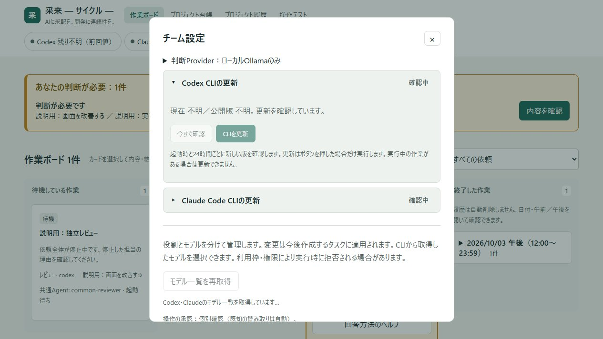
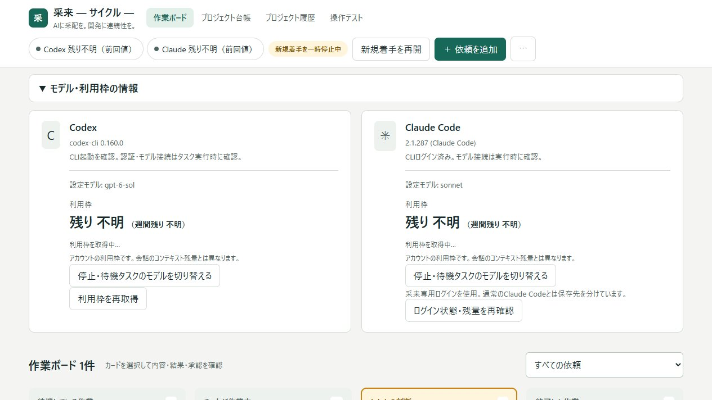
通知
ボード上部でPC通知・音声通知を有効にします。PC通知にはブラウザの許可が必要です。「声を試聴」で音を確認してください。音声はブラウザ／Windowsに利用可能な声を使うため、声質は環境に依存します。通知を閉じても判断待ち状態は続きます。音声が使えない場合は画面の「あなたの判断」を確認します。
スマホ
- PCとスマホを同じ自宅Wi-Fiに接続する。
- PCボードの「スマホから接続」を開き、現在表示されている接続先へアクセスする。
- 接続画面の案内に従い、アクセスを認証する。
- ボードが表示されたら対象カードを開き、PCと同じ判断・回答手順で操作する。
接続先はローカル設定・ネットワーク状態によって異なります。画面に表示される現在の接続先を使用してください。公開ネットワークからのアクセスを前提としません。
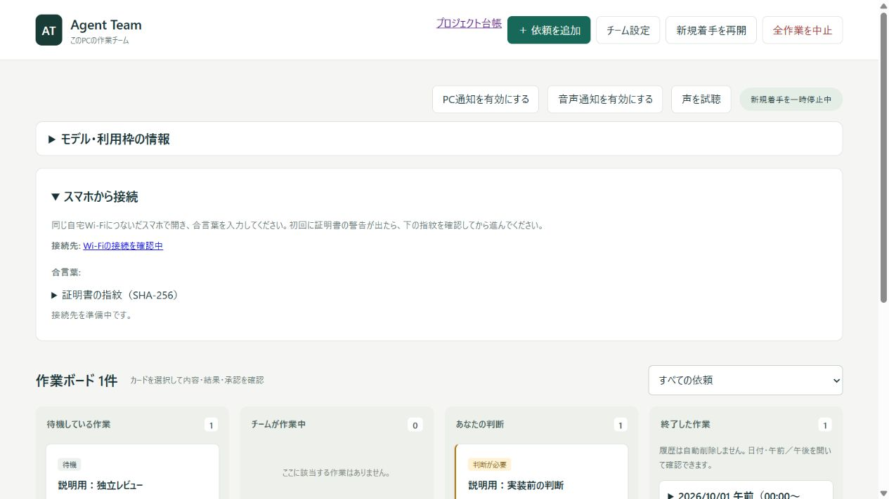
起動前にポートとアプリ識別を確認してください。
python -X utf8 <SAIRAI_HOME>/manage.py status python -X utf8 <SAIRAI_HOME>/manage.py start python -X utf8 <SAIRAI_HOME>/manage.py stop python -X utf8 <SAIRAI_HOME>/manage.py login-claude python -X utf8 <SAIRAI_HOME>/manage.py background-status
statusは /health のアプリ識別を確認します。startはバックグラウンド起動を使います。Windowsの実行ポリシーを全体変更する必要はありません。停止時は実行中の作業が中断されることを確認します。既存のバックグラウンドタスクがある場合、任意の別ポート指定がそのタスクへ反映されるとは限りません。
バックアップ
作業ボードの「ローカルDBをバックアップ」と台帳の「DBをバックアップ」はそれぞれ対象を確認して使います。DBの保存だけではプロジェクトソース・共通定義・設定・ZIP・証拠がすべて保全されるわけではありません。復旧前に現状を別に保存し、コードを戻す操作とDBを戻す操作を分けます。
過去DBの復元はそれ以後の履歴も戻すため、通常は履歴DBを保持します。機能を戻しても削除済みフォルダが自動復元されることはありません。保存・復元後は起動、記録、対象プロジェクト、残った検証ゲートを確認します。
ローカル設定を確認する
<SAIRAI_HOME>は采来の設置場所、<PROJECT_ROOT>は対象プロジェクト、<PORT>は利用ポートです。実際の値はローカル設定・管理者向けREADMEで管理し、コマンド例のプレースホルダーを置き換えて実行してください。公開マニュアルの表記は実値ではありません。
付録F 検証・撮影条件
操作説明と、この改訂で確認した範囲を区別するための記録です。利用者向け本文には制作環境の事情を記載しません。
| 対象 | 確認範囲 |
|---|---|
| 画面・資料 | 実UIのスクリーンショット、HTML表示・検索・構成図。説明用データを使用 |
| 本改訂 | 文章・情報設計の変更。機能追加は行わない |
| スマホ実機接続 | NOT TESTED：この資料作成では未実施 |
| 音声実聴 | NOT TESTED：未実施 |
| 削除・実フォルダ移動 | NOT TESTED：資料作成のための実行は行わない |
| ツールによるGitHub設定変更 | NOT TESTED：プロジェクト削除機能の実行確認は行わない。マニュアル公開作業とは別 |
| CLI更新・開発依頼の実行 | NOT TESTED：資料作成では未実施 |
| トークン削減量 | 限定した操作テストでMEASURED。実業務・課金額はUNMEASURED。操作テスト章と総合レポートを参照 |
過去の実行記録を今回の検証結果として再利用しません。実運用の受入確認は対象の環境・作業でEvidenceを収集します。
2026-10-02の保存済み計測記録を参照：操作比較76ケース、組み込み時の34テスト、稼働版でのページ移動1件。今回の文書更新で追加のモデル呼び出しは行っていません。
付録G 改訂履歴・参照資料
2026-10-02：操作テストの実装状態と計測結果を追加。集計レポートへの参考リンクを掲載。ケースが少ないため評価は暫定とし、今後も継続計測する方針を明記しました。
2026-10-01：利用者向けの操作を前半、内部構成・保守情報を付録へ再配置。用語集・安全原則・実装状態表・機能マトリクスを追加。Git運用の表現、アーカイブのDanger Zoneと実処理順を整理。環境パス・ポートを一般化しました。
今後の更新方針
事実・運用・推測・未確認を分けます。各説明はIMPLEMENTED / OPERATION / MEASURED / UNMEASURED / UNKNOWN / NOT TESTEDとして扱い、根拠と対象版を示します。画面変更時は操作名・画像・次の操作を合わせて更新します。
この資料の根拠はローカルの現在のコード、実画面、機能別資料です。過去の検証記録は、その時点の結果として扱います。画面変更時はスクリーンショットと操作名も更新してください。
| 対象 | 参照（agent-team/からの相対パス） |
|---|---|
| 目的・範囲 | AGENTS.md、SCOPE.md、PROJECT_CONTEXT.md |
| 運用 | docs/OPERATIONS.md、manage.py |
| 共通Agent・Skill | docs/SHARED_HARNESS_20260930.md、team_common_agents.py、team_shared_harness.py |
| 判断層 | docs/DECISION_LAYER.md、docs/OLLAMA_DECISION_LAYER.md、docs/DECISION_VERIFICATION_20260930.md |
| ボード復旧・引き継ぎ | docs/BOARD_RECOVERY.md、docs/HANDOFF_DB.md、docs/DECISION_HELP.md |
| 通知・利用枠・モデル | docs/VOICE_NOTIFICATIONS.md、docs/USAGE_DISPLAY.md、docs/MODEL_SELECTOR.md |
| 台帳・移動・削除 | docs/PROJECT_LEDGER.md、docs/PROJECT_MOVE.md、docs/PROJECT_ARCHIVE.md、docs/PROJECT_DELETE.md |
| 補完 | docs/HARNESS_EVIDENCE_FILL.md、team_harness.py、team_harness_fill.py |
| 画面 | web/index.html、web/app.js、web/ledger.html、web/ledger.js |
| 資料の再作成 | docs/manual/build_manual.py、capture_fixture.py、screenshots.json |
参考レポート
該当する章はありません。検索語を短くしてください。